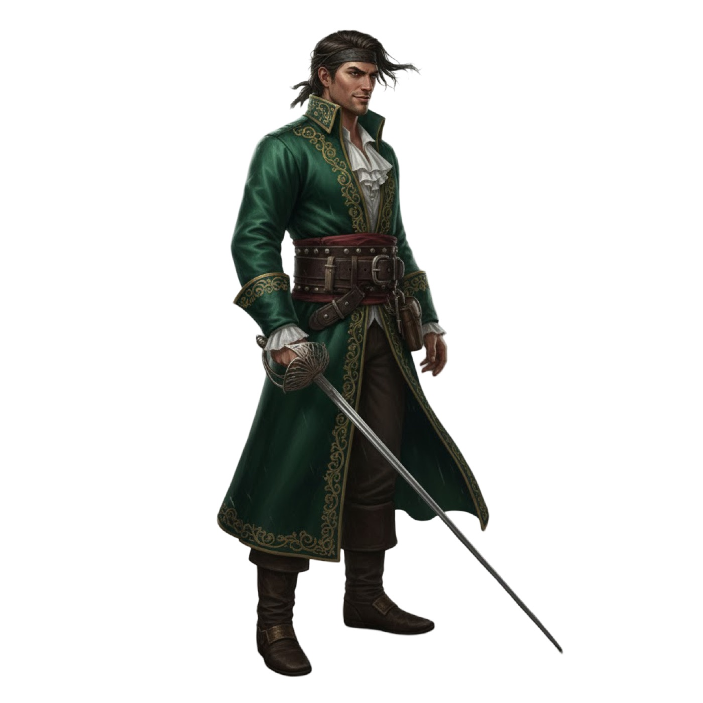
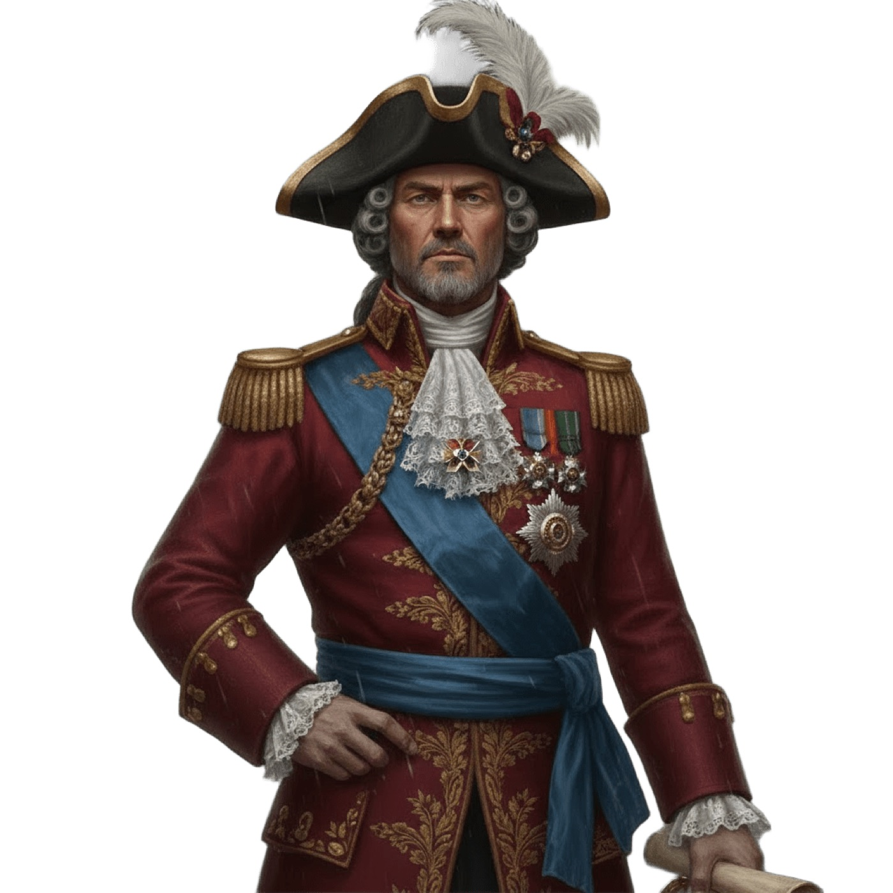

NAVEGANT...
Buscant el següent pirata...
DUEL A ESPASA
L'ABORDATGE MUSICAL
Ets un pirata en busca de fortuna. Has de derrotar els 6 Capitans més temuts del Carib per reclamar el
seu Tresor.
1. El Capità et llançarà un desafiament (la pista).
2. Respon amb rapidesa i intel·ligència per aturar la seva espasa.
3. Guanya el rumb de la història o acaba al fons del mar!
1. El Capità et llançarà un desafiament (la pista).
2. Respon amb rapidesa i intel·ligència per aturar la seva espasa.
3. Guanya el rumb de la història o acaba al fons del mar!
CARREGANT...

🔊

L'ÚLTIMA OPORTUNITAT
"Escolteu-me bé, lladregot. El mar està infestat d'escòria que s'atreveix a desafiar l'imperi. Teniu una única missió: trobar i derrotar els 6 Capitans més perillosos:1. Fray 'El Torturador', el monjo heretge que castiga amb sang.
2. Almirall 'L'Humanista', un traïdor francès d'esgrima elegant.
3. La Corsària 'De Versalles', la reina de les marees i el luxe.
4. Comodor 'Viena', la disciplina feta ferro i canonada.
5. Capità 'Tempesta', la fúria de la natura en un home solitari.
6. Baró 'El Magnat', el cor de gel del nou món industrial.
Si completeu la tasca, el vostre passat serà esborrat. Si falleu... acabareu ballant al final de la corda de la forca abans de la posta de sol. El temps corre. Aneu-vos-en!"
CLANG!
¡DERROTA!
Les rates es menjaran el teu barret...